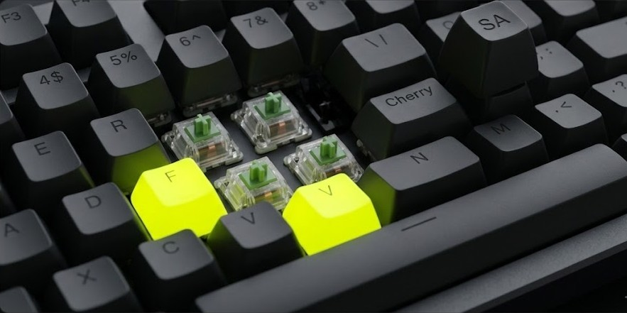

Actuation force
How hard you press before a key registers, measured in grams. Lower feels lighter; higher feels firmer.
Switch Guide
Every switch fits into one of three groups. Filter the list below to feel out which one matches how you want to type.
| Type | Feel | Sound | Best for |
|---|---|---|---|
| Linear | Smooth, no bump | Quiet | Gaming, fast typists |
| Tactile | Noticeable bump | Moderate | Typing, all-purpose |
| Clicky | Bump + click | Loud | People who love feedback |
Two boards with identical switches can sound completely different depending on the keycaps. Profile, material, and thickness all matter — it's one of the easiest upgrades for a beginner.

How hard you press before a key registers, measured in grams. Lower feels lighter; higher feels firmer.
Pressing a key all the way down. Some typists float above it; others press firmly each time.
The plastic caps you actually touch. Material and profile change both feel and sound.